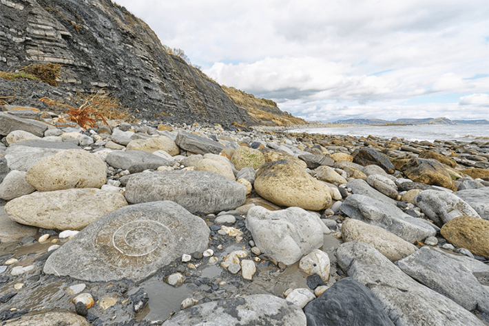
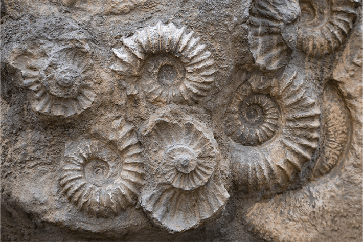
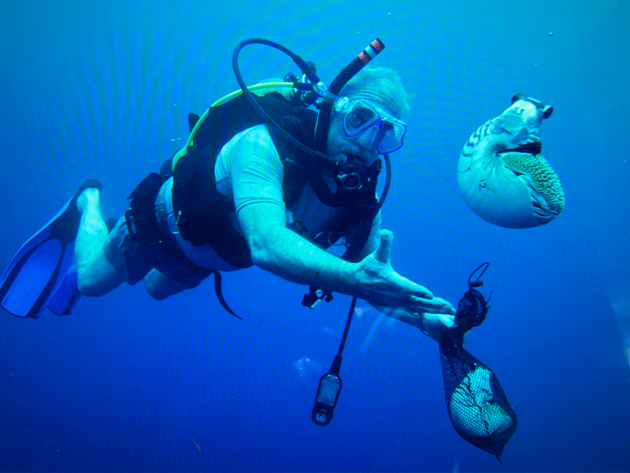

The quaint seaside village of Lyme Regis is precariously perched between rugged black cliffs in southwestern England. It sits astride one of the most famous fossil sites in the world. On an autumn day several years ago, I left behind the crowded streets of souvenir shops selling fossils and T-shirts. I walked along the cliffs and over the ribbed rocks underlying the beach, stepping across one of the most devastating mass extinctions of the geological record.
The fossils beneath the village represent the end of the Triassic geological period. Around 200 million years ago, great gouts of deep Earth material welled out of volcanoes. As it flowed across land and sea bottom, it decanted enormous volumes of carbon dioxide. Mixed with the late Triassic atmosphere, it caused global temperatures to skyrocket.
But it was not heat alone that stressed the world into one of the greatest mass extinctions in Earth history. The warming planet reduced the temperature differential between polar and equatorial regions. A consequence was a slowing of the important ocean currents called Thermohaline Circulation Currents. These are the drivers of oxygenating the oceans. When they slow and then halt, mass extinction follows. The living Triassic world, home to early dinosaurs, invertebrates, strange plants, and so much else, became a death world—on land, in the sea, in the skies.
Read more: “Pirates, Killer Whales, and Cheap Jewelry: A Life in Science”
As I walked along the rocky beaches northwest of the town itself, I traversed from the youngest strata of the Triassic period to the oldest of the Jurassic period. The strata changed from being largely devoid of fossils to becoming packed with them. These fossils were almost exclusively cephalopod fossils, including the remains of nautiluses, squids, and belemnites, squid-like animals with an internal skeleton. This is where the area’s fabled 19th-century paleontologist, Mary Anning, made some of the most important finds of her life. They included the complete, if flattened skeletons of early Jurassic period ichthyosaurs, or “fish lizards,” among many other treasures that she extracted from these strata with the primitive, brute force equipment available in her time.
But far more commonly than the marine reptiles, which now adorn so many museum walls, are the fossils that were used as the title of the 2020, nearly totally imaginary movie Ammonite. The movie was focused on the supposed romantic affair between Anning and geologist Charlotte Murchison, as they grubbed fossils out of the Jurassic coastline. One of the few aspects that rang true was the abundance of the ammonites discovered by Anning and Murchison.
Ammonites are gorgeous white spirals that look like the externally shelled nautiluses, except with far more styles. Where the nautilus fossils had smooth exterior shells looking very much like those of the modern day, the ammonites were more rococo. They had ribs, spines, indented lines along the shell in all manner of designs. Most importantly, the ammonites had respiration systems capable of surviving extremely low oxygen levels just as the nautilus does today.
Like the dinosaurs in the earliest Jurassic period, ammonites evolved the ability to live in a superheated world. Some lived just above the sea bottom, some in mid-water, some at the surface. Some simply floated and might have spun like pinwheels in waves; others were flat, compressed, and surely awesome and rapid swimmers. Their only competition in the earliest Jurassic probably came from their own kind. Gone were their 200-year-long nemeses: bony and cartilaginous fish, suffocated by the ocean’s lack of oxygen.
More than 40 species of ammonites existed in the early Jurassic of Europe. Add in the squids and nautiluses, and there were probably at least 100 species of cephalopods living in the shallow warm waters in the 2 to 5 million years after the Triassic mass extinction. It was a marine biology unlike anything humans have ever witnessed.
Today, the Lyme Regis fossils tell us a clear story: The survivors of the Triassic mass extinction were the seedstock of a great cephalopod flourishing.
As a paleontologist who has studied cephalopods and mass extinctions for more than five decades now, I see signs of that story today, similar in ways both familiar and horrifying. It is as if our world is like the one at the end of the Triassic. Signs point toward a mass extinction, the sixth in the geological time of animals, that is either completed or heading toward finality in our ocean communities.
Once again, we are in a warming world; once again, ocean currents that supply oxygen are slowing; once again, a significant proportion of marine predators, such as the predatory bony and cartilaginous fish, are disappearing. And once again, the cephalopods are flourishing, blooming like weeds, as they fill the ecological niches of the ocean animals around them being wiped out
I began to study the living nautilus, morphologically as close to an ammonite as we will ever get, as a graduate student in 1975. The living nautilus is the great survivor. As good as the ammonites were at surviving a mass extinction caused by low oxygen oceans, they ran out of luck due to the great asteroid collision of 66 million years ago. Yet the catastrophe spared one of the common fossils found at Lyme Regis—an enormous nautiloid species that looks remarkably like those still living today in the tropical Pacific Ocean and parts of the Indian Ocean.
At age 25, I took my first diving trip to the waters of the tropical Pacific, including New Caledonia, a giant island that parallels the Great Barrier Reef of Australia, and Papua New Guinea, which has the highest diversity of nautiluses.

JURASSIC BEACH: A walk along the rocky shore at Lyme Regis, England, with its visible cephalopod fossils, is a step back into deep time. Credit: MarkGodden / Adobe Stock.
I arrived in Noumea, New Caledonia, with the fervor of the young and the skills of a professional salvage diver and dive instructor, both of which I had been earlier in college. It’s one of few places on Earth where nautiluses rise to a depth shallow enough for human divers with scuba gear to see them—but only at night. My French diving partner, Pierre Laboute, and I would sit on the edge of the barrier reef in the dark, from perches about 60 feet deep, and with our dive lights probe the deep beneath us. Several times each dive, our lights would pick up a nautilus, swimming up the vertical wall from its 1,000-foot deep, daytime resting place.
I have returned to the South Pacific many times to observe the living nautilus and its underwater environment. This includes the waters and coral reefs surrounding Australia, the Philippines, Palau, Vanuatu, New Caledonia, Samoa, and Fiji. My colleague Bruce Saunders and I discovered a second nautiloid genus, Allonautilus, which we formally named in 1997, and is known today as Allonautilus Ward & Saunders.
In December 2025, 50 years after my first trip, I was back again. I was not quite as spry as I was a half century ago, but still able to gear up with old, but well-maintained dive equipment and underwater cameras, and enter the world of these living fossils, having become, at least academically, a living fossil myself. What we observed was a remarkable replay of the early Jurassic—the cephalopods taking over niches once dominated by fish.
We saw cephalopods taking over at all sites save those still being actively fished for nautiluses. Even that, though, is not a clear-cut story.
For a century, nautiluses have been hunted for their meat and beautiful spiral shell. In fact, since 2010, my trips to the South Pacific had been funded to research the threats of extinction to nautiluses. And today in places where nautiluses are still hunted, such as the Philippines and Indonesia, they do face extinction. This, despite the 2017 passage of international controls on their heretofore unregulated slaughter, and new rules against trading their shells—rules informed by census counts based on my groups’ deep water camera work.
Of the many sites we visited over the years, the Philippines were the saddest. As far back as my first trip there, in 1987, local fishermen told me that the nautilus had been totally fished out of the area’s Tanon Strait. In the 2010s, as we began to document the Philippine populations at other regions than Tanon, our deep-water cameras, which filmed at 1,000-foot depths, showed only the occasional nautilus. Thousands had been caught and sent to Europe and America, with the fishermen receiving $1 a shell. We discovered that as many as 500,000 nautilus shells (or parts of their shells) had been imported into the United States alone in the first decade of the 21st century.
The nautilus alone among cephalopods lives a relatively long life. It takes them up to 15 or 20 years to reach full size. So, the killing of that many nautiluses in such a short time would seemingly have a catastrophic effect on the living species. But that hasn’t been the case.
At island nations other than the Philippines, such as Fiji, Palau, and Papua New Guinea, as well as off the Great Barrier Reef of Australia, we found that the laws that banned or regulated the nautilus trade worked. Genetic analyses, using samples provided from our trips, discovered three new species. And this is probably only the tip of the nautilus diversity iceberg. We have discovered that every island group separated by deep water seems to have its own endemic nautilus species.
And yet, while the nautilus has been spared in countries with legal protections, the fish consumed by humans are not.
Where are the sharks?”
Last December, as I was following a pair of bobbing nautiluses with my underwater camera, this was my persistent thought.
During my work in these same waters in the 1980s and ’90s, diving was hazardous. I was literally chased out of the water on numerous occasions by aggressive grey reef sharks, even the small ones. Now I saw no sharks at all. My colleagues and I also found that few to no fish, such as Conger eels and snapper, were caught in our nautilus traps, something that invariably occurred in the 1980s. Our underwater video cameras, over the course of 300 hours gathered in the past five years, showed fewer fish than we had ever seen before. But showed many, many more octopus, squid, and nautiluses. And we weren’t the only ones seeing it.

ORIGINAL SURVIVOR: Ammonites, fossilized here, thrived during a mass extinction because they got by on extremely low levels of oxygen. Credit: mejn / Adobe Stock.
In 2016, a team of fisheries biologists from the University of Adelaide, in Australia, publis hed a paper that looked at the global catch of cephalopods from the world’s oceans from the early 1950s onward.1 The scientists were astonished at their results. They found that the catch of cephalopods was showing just the opposite of the known catch of human-food fish.
While the global yield of caught fish tonnage was steadily dropping, the catch of cephalopods was going up. And it was among virtually every kind of cephalopod, from the fast-moving squids to the bottom-dwelling cuttlefish to the eight-armed octopus. Across 35 species of cephalopods that have records kept concerning their global catch, all showed significant increases in the tonnage being caught and sold. Another study estimated that the yearly tonnage of cephalopods caught increased by more than 400 percent from the 1960s to 2014.2
The authors of the 2016 study proposed that human-caused warming of the oceans allowed cephalopods to grow faster than fish they might compete with. But they also stated the vast increase of cephalopods relative to fish populations was related to “the global depletion of fish stocks, together with the potential release of cephalopods from predation and competition pressure.”
Indeed, cephalopods and fish have been both competitors and predators on each other for 450 million years. Remove one, and the other is affected. Generally, it’s the fish that triumph. The bite scars we found on many nautilus shells that we observed in the 1980s tells us that early in nautiluses’ lives, predation by sharks and other fish were the most significant cause of mortality. Plus, sharks and bony fish compete for food with the nautiluses, which are not predators. They are scavengers. Dead fish or other carrion are their prized food, but they swim slowly once the scent is detected, and in a big-fish-and-shark-filled world, by the time they get to that dead tuna or snapper, it has already been eaten by the fast-swimming fish.

DEEP DIVE:Author Peter Ward releases a nautilus with a transmitter to track its movements and behaviors near the Great Barrier Reef in the Coral Sea. Photo courtesy of Peter Ward.
Now, the tables are turned. That alone is an augury.
In the ocean’s Mesophotic Zone, the depth with little light, from around 320 feet to 1,600 feet, we saw cephalopods thriving. Paleontologists call this the “Recovery Zone.” After a mass extinction, it’s where the survivors mostly dwell and compete for oxygen and food. It is the cradle of future marine life. It’s where the cephalopods have an evolutionary advantage.
As a group, they are one of the fastest known “evolvers.” They have short lifespans, about six months to two years, and natural selection works quickly to reward survival to new genes that increase population numbers. They reach sexual maturity at full size after only one to two years since hatching. They also have short reproductive cycles, which produces many more generations over the same period than fish can accomplish. This is how they win the evolution race: outgrow, out-reproduce, and out-evolve.
Nothing stokes the evolutionary fires of new species formation like the slaughter of the incumbents. The bigger the body count, the faster the refilling of community positions in many environments. And that’s what we now see in the recovery zone.
The removal of so many large fish has enabled cephalopod populations to thrive. Sharks, in fact, are among the most significant victims of overfishing. A 2021 article in the journal Current Biology stated that “overfishing” of sharks is driving one third of all species to imminent extinction.3 Add in a warming ocean (which favors cephalopods) with diminishing oxygen (which favors cephalopods), and you see why the cephalopods are flourishing.
Read more: “Twilight of the Nautilus”
It’s not just us scientists who are witnessing the sea change. In 2025, fishermen along England’s southern coast, not far from the fossil beds of Lyme Regis, pulled up their nets and traps not with the Dover sole, crabs, or lobsters they were expecting. Instead, they were filled with cephalopods, notably octopus and squid. Steve Simpson, a professor of marine biology at the University of Bristol, told The New York Times that “climate change is a likely driver” of the population boom. “We are right on the northern limit of the octopus species range, but our waters are getting warmer, so our little island of Great Britain is becoming increasingly favorable for octopuses’ populations.”
This is undoubtedly correct. But a more thorough hypothesis is that the removal of so many fish stocks allowed the octopus populations to thrive and increase in size. The global fisheries industry is akin to the global petroleum industry. It produces a product of importance to humanity. But leaves humans to contend with its deep environmental gouge in Earth.
As scientists, we can’tsay for certain the current rise of cephalopods represents the early phase of a new mass extinction in our oceans. But there are certainly signs for Cassandra to see.
For one, this is what a mass extinction does. There is no sudden death, not even after the Chicxulub asteroid hit the Yucatan peninsula 66 million years ago. Extinction still took a few decades. The extinction ending the Triassic period took a minimum of 1 million years to consummate its slaughter, based on our knowledge of rock dating, from the first evidence of darkening strata in the Late Triassic, to the appearance of those thin, dark rocks of the Lyme Regis shore and seaside cliffs.
As time intervals go, this cephalopod survey, measured in decades, is so short compared to the vastness of geological time as to be so ephemeral. But the great extinctions of the past did not include the asteroid of humanity. They did not include very determined humans in vast armadas of fishing boats, factory ships quickly processing the catch, or innumerable stores in Asia where hundreds of shark fins hang in the windows for sale.
If we continue to fill the atmosphere with carbon dioxide in volumes that match the volcanoes and lavas that tended the Triassic, creating a reduction in high latitude polar regions without similar temperature increase in the tropics (what is happening now), and if we cause the critical ocean currents to slow or cease by 2050, and studies predict we are, then in all probability we are headed toward the sixth mass extinction.4 The cephalopods are coming.
Calamari, anyone? 
References
-
Doubleday, Z.A., et al. Global proliferation of cephalopods. Current Biology 26, PR406-R407 (2016).
-
Ospina-Alvarez, A., et al. A network analysis of global cephalopod trade. Scientific Reports 12, 322 (2022).
-
Dulvy, N.K., et al. Overfishing drives over one-third of all sharks and rays toward a global extinction crisis. Current Biology 31, P4773-4787 (2021).
-
Keating, C. Is global warming tipping key Atlantic ocean currents towards “collapse”? Carbon Brief (2026).
Lead image: Strolch fec. Unknown Leipzig ; Berlin ; Wien : F.A. Brockhaus